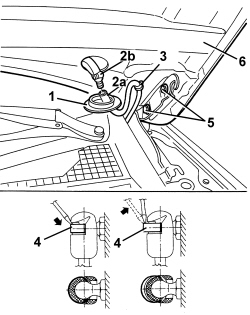

7210E20 R.R. BONNET
- Path
- Procedures > 72 PANELS AND FRAMES > 7210 REMOVING-REFITTING > 7210E EXTERNAL PARTS > 7210E20 R.R. BONNET
- Kind
- repair procedure (removal / refitting; the operation number is the code)
- Applies to
- all engines; all production periods
- Interactive page
- https://sloeber94.github.io/elrnDB/alfa/159/en/#/939011400
Applies to: all engines; all production periods
 Removing
Removing
 Refitting
Refitting- Open the bonnet.
1. Release the screen washer fluid pipe partition passage seal.
2. Disconnect the screen washer fluid pipe (2a) from the three-way connector (2b).
3. Release the screen washer fluid pipe from the retainer.
4. Using a screwdriver, release the retaining clips (without detaching them) on both the top ends of the telescopic struts, supporting the bonnet appropriately.
5. Working on both sides of the vehicle, undo the hinge fixing bolts.
6. Keep the bonnet.

Applies to: all engines; all production periods
Refitting
Removing- Check that the bonnet is not damaged.
- Position the bonnet and screw in the hinge fixing bolts (without tightening them).
- Reconnect the telescopic struts, press fitting the ends in the ball pins.
- Fit the retaining springs.
- Secure the screen washer fluid pipe to the retainer.
- Connect the screen washer fluid pipe to the three-way connector.
- Fit the screen washer fluid pipe partition passage seal.
Topics linked from this page (1)
Topics that link to this page (9)
- 5040A81 PIPE FROM EXPANSION VALVE TO CONDENSER AND COMPRESSOR FILLING R R
- 5040A82 PIPE FROM COMPRESSOR TO CONDENSER AND EXPANSION VALVE FITTING R R
- 5520B10 STARTER MOTOR - R+R
- 7210A31 R R FRONT SHOCK ABSORBER ATTACHMENT DOME, (ONE) LH OR RH
- 7210A32 R.R. PARTIAL FRONT SHOCK ABSORER TURRET MOUNTING (ONE), LEFT OR RIGHT
- 7210A35 R.R. LOWER FRONT STRUT/SIDE PANEL (COMPLETE) (ONE) LEFT OR RIGHT
- 7210A46 R R (COMPLETE) UPPER FRONT STRUT (ONE) LH OR RH
- 7210A60 R.R. FRONT PILLAR
- 7210E18 R.R. FRONT WING